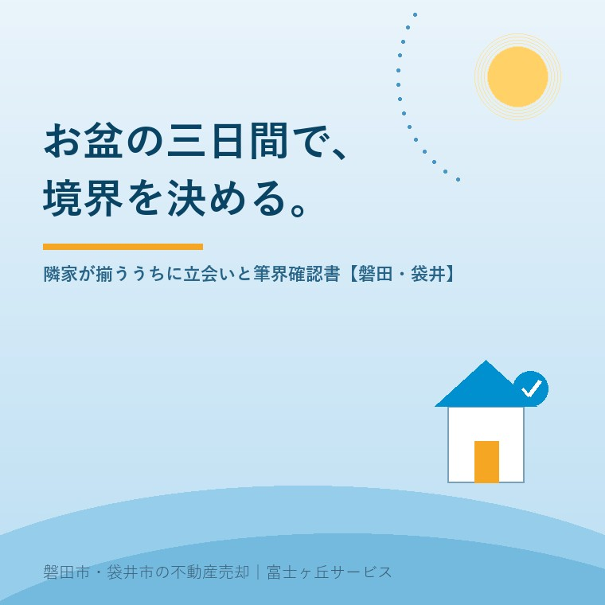

2026年8月7日｜カテゴリ：相場・地域・売却実務

この記事の要点
Q. お盆に実家へ帰ります。片付けのつもりでしたが、売るなら他にやっておくことはありますか。
A. お隣への「顔合わせ」と連絡先の交換です。実家の売却でいちばん日程が読めないのが境界立会い。測量そのものは数日で終わるのに、隣地の所有者と日を合わせるのに何か月もかかります。しかも磐田・袋井の実家では、お隣もまた空き家か、ご高齢のご夫婦だけ。相続人が帰ってくるのは、お盆と正月の年2回だけということが本当に多いのです。2026年のお盆は8月13日（木）〜16日（日）。この期間に、法務局で資料を取り、境界標を一緒に探し、「近く測量をお願いすることになります」と伝えて連絡先を交換しておく。それだけで、後の確定測量が1〜2か月縮みます。磐田市・袋井市では、介護施設の運営から不動産事業を始めた富士ヶ丘サービスのような地域密着の会社に、帰省の前に一度相談するという選択肢があります。
実家の売却で、私たちがいちばん「読めない」と申し上げるのが境界の確定です。売主さまの都合でも、当社の都合でもなく、お隣の都合で決まるからです。
そして磐田・袋井の住宅地や集落では、その「お隣」もまた高齢化しています。名義人は施設に入っておられ、判断は東京や名古屋の息子さんがしている。すると、境界の話ができるのは、その息子さんが帰ってくる数日だけ。今日は、その数日をどう使うかという、きわめて実務的な話をします。
2026年のお盆は、8月13日（木）が迎え火、16日（日）が送り火。前の週末から数えると、8月11日（火・山の日）を含めて長めの休みを取る方も多い時期です。
ここで大事な事実がひとつ。法務局も市役所も、お盆休みはありません。行政機関は暦どおりですから、8月13日（木）と14日（金）は普通の平日です。つまり──
| 日 | できること |
|---|---|
| 8月13日（木）・14日（金） | 平日。法務局で図面を取る／市役所の道路河川課に道路との境界を照会する／土地家屋調査士に電話が通じる |
| 8月14日（金）夕〜16日（日） | 隣家に人が揃う。挨拶、境界標の確認、連絡先交換、越境物の見分 |
この「平日と帰省が重なる三日間」は、一年でお盆と年末年始しかありません。年末年始は役所が閉まりますから、実質はお盆だけです。
実家を売るとき、買主から求められるのは多くの場合「確定測量図」です。土地家屋調査士が現地を測り、隣接するすべての土地の所有者と立ち会って筆界を確認し、筆界確認書（境界確認書）を取り交わして作る図面です。
費用と期間の目安は、おおむね次のとおりです。
| 種類 | 費用の目安 | 期間の目安 |
|---|---|---|
| 現況測量（境界は確定しない） | 10万〜20万円程度 | 2週間〜1か月 |
| 確定測量（民民のみ） | 30万〜50万円程度 | 1〜3か月 |
| 確定測量（官民境界を含む） | 50万〜100万円程度（80万円前後が多い） | 3か月〜（役所との協議次第） |
ご覧のとおり、期間の幅が費用の幅より大きいのです。測量作業そのものは数日。残りはほぼ全部、立会いの日程調整と書類のやりとりです。手取りで考える実家の売却でも触れましたが、測量費は手取りを削る大きな項目のひとつ。しかしそれ以上に、「引渡しが3か月遅れる」ことのほうが、ご家族には重くのしかかります。
なお、境界標を調査したり境界に関する測量をしたりするために隣地に立ち入ることは、令和5年4月1日施行の改正民法209条で明確に認められました。あらかじめ目的・日時・場所・方法を隣地の所有者と使用者に通知する必要がありますが、「勝手に入れないから測れない」という時代ではなくなっています。ただし、これは立ち入る権利であって、署名をもらう権利ではありません。だから顔合わせが要るのです。
磐田市の土地は静岡地方法務局 磐田出張所（磐田市見付3599-6／磐田地方合同庁舎2階／0538-32-2618／窓口9時〜17時）、袋井市と森町は袋井支局が管轄です。実家のすぐ近くにあります。取るのは3つ。
ついでに、隣接地の登記事項証明書も取っておいてください。誰の名義か、住所はどこかが分かります。地番が分かれば誰でも取れます。ここで「お隣も名義が亡くなった方のまま」だと判明することが、実に多いのです。
ここが本題です。手ぶらで行かず、菓子折りをひとつ。伝えることは3つだけで足ります。
この③が、三日間の最大の成果物です。土地家屋調査士が困るのは、境界が分からないことではなく、連絡がつかないことだからです。
可能なら、お隣と一緒に敷地の四隅を歩いてください。境界標には、コンクリート杭・石杭・金属標（プレート）・金属鋲・プラスチック杭などがあります。土に埋もれていたり、草に隠れていたりしますので、軍手と小さなスコップがあると助かります。
ひとつだけ強くお願いがあります。境界標を自分で動かしたり、抜いたり、埋め直したりしないでください。境界標を損壊・移動・除去して土地の境界を認識できなくする行為は、刑法262条の2の境界損壊罪に当たります。草刈り機で飛ばしてしまった、というのも実際に起きます。触らず、写真を撮る。それだけにしてください。
立会いのあと、土地家屋調査士が筆界確認書（境界確認書・境界立会確認書などとも呼びます）を作ります。測量図を添えて、「この線が筆界であることを、双方確認しました」と署名押印する書面です。
| よくある質問 | 実務での答え |
|---|---|
| 実印と印鑑証明書は必要か | 法律上の決まりはない。実印＋印鑑証明書で取り交わす方法と、記名＋認印で取り交わす方法の両方が実務にある。買主や金融機関の要求水準で決まることが多い |
| そもそも法律で決まった書類か | いいえ。分筆登記や地積更正登記の法定添付書類ではなく、当事者間の確認書。だから「押したくない」と言われると強制できない |
| 名義が亡くなった親のままなら | 売主側も隣地側も、相続人全員の確認が必要になるのが原則。人数が増えるほど時間がかかる。相続登記の義務化を先に済ませておくと段取りが軽い |
| 「筆界」と「所有権界」は同じか | 違います。筆界は登記上の線、所有権界は実際に所有権が及ぶ範囲。塀が越境していても筆界は動きません |
もうひとつ、越境が見つかった場合は越境の覚書を別に作ります。「現状のブロック塀の越境を相互に認識し、将来建て替える際に筆界まで後退させる」といった内容です。撤去を求めず、次の建て替え時に直すという形にすると、まとまりやすくなります。
「隣の方が高齢で判断が難しい」「相続人の一人と連絡がつかない」──よくあります。あきらめる必要はありません。
法務省は令和4年4月14日付け法務省民二第535号通達で、表示に関する登記における筆界確認情報の取扱いを全国統一しました。要点は、現地復元性を有する登記所備付地図または地積測量図等の図面が存在する場合には、原則として筆界確認情報の提供等を求めないというものです。隣地所有者が不明で確認情報を得にくい事案が増えたことが背景にあります。
つまり、法務局に現地復元性のある地積測量図が残っている土地なら、隣の署名が無くても分筆や地積更正の登記ができる可能性があるということ。だから、三日間の最初に法務局へ行って地積測量図の有無を確かめる意味は大きいのです。分筆して売る場合は、なおさら効いてきます。
筆界特定登記官が、筆界調査委員の意見を踏まえて筆界の位置を特定する制度です。共有者の一人からでも申請でき、他の共有者は関係人として手続に加わります。手数料は対象土地の価額をもとに算定され、東京法務局の標準処理期間は9か月。裁判より早く、費用も抑えられますが、売却スケジュールとしては決して短くありません。だから、その前段の「顔合わせ」が効くのです。
地籍調査は「土地の戸籍」と呼ばれ、行政が一筆ごとに境界と面積を調べて図面にしていく事業です。国土交通省によれば、全国の進捗率は令和7年度末時点で53％（優先実施地域では81％）。半分は終わっている計算になります。
ところが静岡県は違います。県の第7次国土調査事業十箇年計画（令和2〜11年度）が掲げる目標は、令和11年度末で全体27.7％。目標の時点で全国平均の半分程度なのです（津波浸水想定区域は100％完了を目指すとされています）。
これが何を意味するか。静岡県の多くの土地では、「行政がやってくれた境界確定」がまだ無いということです。売るときに、自分で（正確には土地家屋調査士に依頼して）確定させるしかありません。だからこの地域では、境界の段取りが売却スケジュールを支配します。
ただし、市町ごとの差は大きいので補足します。静岡県が公表した「県内市町地籍調査事業実施状況」（令和8年4月1日時点）によると、県計25.9％に対し、磐田市は80.8％、袋井市は63.2％、森町52.5％、浜松市29.8％、静岡市3.7％です。磐田市は県内では進んでいるほうに入ります。それでも残りの2割の土地の持ち主にとって事情は変わりません。測量費を誰が持つかという話は、公簿売買と実測売買の違い──地籍調査53%と測量費は誰が持つかにまとめました。
もうひとつ、この地域特有の事情として官民境界があります。実家の前が市道や水路（法定外公共物を含む）であれば、磐田市の道路河川課など、市の担当課との境界確定手続が別に必要になります。役所との協議は書類も回数も多く、費用が80万円前後まで上がり、期間も伸びる要因になります。農地や里道・水路が絡む集落部の実家では、ここが最大の関門です。市街化調整区域の実家を扱った回でも触れました。
富士ヶ丘サービスは磐田市見付に事務所を置き、介護施設の運営から不動産に入った会社です。お隣もまた「施設に入った親の家」であるケースを、数え切れないほど見てきました。だからこそ申し上げます。境界の話は、法律の話である前にご近所の話です。お盆に顔を合わせておく。それが、いちばん確実な近道です。
お盆は、ご家族が実家の将来を話せる年に一度の機会です。お盆の実家チェックリストで書いた片付けや設備の確認とあわせて、「お隣に一声かける」を予定に入れてみてください。売ると決めていなくても構いません。連絡先の一枚が、来年の春を助けます。
そして売ると決めたなら、売った翌年に来る保険料の記事もあわせてお読みください。境界と税・保険料は、どちらも「契約前にしか打てない手」です。
ふじがおか実家カルテ｜帰省の前に、地図をお渡しします
どこを見て、誰に声をかけるか。1枚にまとめます。
ご住所をいただければ、公図と登記情報から隣接地の筆数・名義・道路の種別を調べ、「お盆に確認すべき境界点」と「声をかけるべきお宅」を図にしてお渡しします。測量が必要かどうかの見立てと概算費用も添えます。
本記事は2026年8月7日時点の公開情報に基づく一般的な解説です。測量費用と期間は土地の形状・筆数・官民境界の有無・依頼先により大きく異なります。筆界確認書の様式や実印・印鑑証明書の要否は地域および取引の当事者により運用が異なりますので、必ず土地家屋調査士にご確認ください。法務局・市役所の窓口時間や管轄は変更されることがあります。登記の判断は司法書士・土地家屋調査士に、法的な紛争は弁護士にご相談ください。個別のご相談は当社までどうぞ。

この記事を書いた人：大石浩之（宅地建物取引士）
磐田市・袋井市で「介護×相続×空き家」に特化した不動産売却支援を行う富士ヶ丘サービスの代表取締役・宅地建物取引士。介護施設の運営から不動産事業を始めた経験をもとに、売主とご家族が困らない売却を一件ずつお手伝いしています。プロフィール
磐田市・袋井市の実家じまい・相続空き家相談
固定資産税通知書だけでも相談できます
住所があいまいでも、通知書や写真から名義・道路・農地・残置物の確認順を整理します。カルテ申込またはLINEで状況を送ってください。
富士ヶ丘サービス株式会社／静岡県磐田市見付5789番地1／TEL:0538-31-3308／静岡県知事 (2) 第14083号／代表取締役・宅地建物取引士 大石 浩之